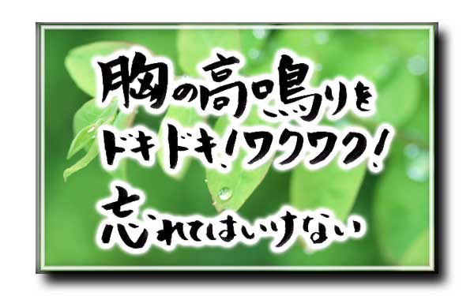

🏠
日
月
縦書き／横書き
そして、ちょうど一年前に素敵なメンターとの出逢いにより、私の人生が音を立てて変わり始めたのです。
そこで、もう一度、封印していた歌や詩をチャレンジしようと思ってから、驚く程のスピードで引き寄せが起こり始め、この電子書籍を出版するという機会に恵まれました。
私と同じように、苦しみ、悲しみ、それでも前に進んでいる人の為に、ことばを通して伝えることが出来ないだろうか？
一人でも多くの人と共感出来ないだろうか？
と想いが込み上げ、そして完成したのがこの電子書籍になります。
是非、私と一緒に心のまんまに、素直に感じて頂き、少しでも生まれてきて良かったと笑顔になり、一歩でも前に進んで頂ければ嬉しい限りです。
エッセンス＃１
本当に私は必要なのか？
私はいない方が良いのではないか？
他の人の方がきっと上手く行く...
あなたが必要かどうかはあなたが決めるのではない...
あなた以外の周りの人が決めること...
だから、もっと自分を大切にしよう...
あなたは、この時代に必要とされて生まれてきていることを...
あなただから...
あなたしかいないんだよ...
エッセンス＃２
本当にこれだと確信を持った時...
人は何も怖くない...
それは、あなたがこれから使命を果たさないといけないから...
はっきり進む道が明確になった時...
何も怖くない！
エッセンス＃３
信じる事...
他の誰かを信じるのではなく...
自分を信じてあげる事...
自分は自分が一番よく知っているから...
エッセンス＃４
心にしまうのではなく...
感謝をし、感情を...
呼吸を...味わう！！
意識は必ず覚えているんだよ！！
ドキドキ！ワクワク！した胸の高鳴りを！！
忘れないで欲しい！！
エッセンス＃５
出来ない事は誰しも言いにくいもの...
これを言えば...
あれを言えば...
結果なんてどうでも良くて...
今、自分がどうしたいかだと思う！
伝えないと何も始まらないよ！
エッセンス＃６
何かを一旦終えた時...
人は満足してしまう...
本当は先の事を決めてから物事に取り組まないと...
何が目標だったか迷ってしまう...
そのためにも、軸をしっかり持とう！
エッセンス＃７
人は悩み...
人は苦しみ...
でも、マイナスな思いではなくて...
前に進みたい...
どうにかして乗り越えたいという思いがあるから...
その思いを越えた時、人は成長する！！
エッセンス＃８
私たちは、生まれた時から人と比べられる事は当たり前...
でも、よく顔を見てみると全く同じ人はいないはず...
だから、人と違っていて当たり前！
自分らしくで良いんですよ！！
エッセンス＃９
 何か問題が起きたとき...
何か問題が起きたとき...
その事ばかりが頭をよぎる！！
でも、よく考えてみて！！
どうして起こったのか？
どうしてこんな気持ちになるのか？
そこには必ず原因があるから...
答えを本当は知っているから...
エッセンス＃10
経験はそう簡単に手にできるものではない...
あなたが今歩む上で必ず必要な事...
苦手とか...
出来ないとか...
とにかくやってみる！！
楽しく！ワクワクしながら...
経験を大切にしよう！！
エッセンス＃11
変わりたいと思っていても...
なかなか人は動けない...
まずは、できることから一つだけ...
一つだけで良いから...
今までやらなかった事をしよう！！
それができた時、自分をたくさん褒めてあげよう！！
エッセンス＃12
あなたはどんな人生を歩みたいですか！
人はひとりでは何もできない...
人から知識を得たり、感情を感じたりするから成長する！！
たった一回きりの時間...
たった一回きりの人生...
誰と人生を送るかで人生は大きく変わる！！
エッセンス＃13
たくさん感じたい...
いろいろ感じたい･･･
本当は素直になりたい...
自分らしく生きていたい...
結果が怖くて自分にブレーキをかけている...
動けない事を悩むのではなく...
自分にとって何が必要なんだろうって捉えて欲しい！！
エッセンス＃14
未来を描く...
すてきな感情がいっぱいつまった映像！
その時こそ、本当に自分の事が大好きだから...
意識せずに自分を許せているんだよ！！
エッセンス＃15
昔はすごかったんだ...
昔は輝いていたんだ...
確かに昔の栄光は素晴らしいと思う...
でも、しがみついていたら何にも変わらないよ！
これからの栄光をどう手にするかが大切！！
エッセンス＃16
自分はダメだから...
ムリだから...
マイナスな感情で逃げていたら何も始まらない...
あなたを必要としている人はたくさんいるんだから...
自分を信じよう！！
ムリ... ダメ... ではなく...
それを、制限をしているのは自分自身だから！！
エッセンス＃17
エネルギーの使い方を間違っていませんか？
自分のエネルギーはすごい力を持っている...
マイナスの憎み... 恨み... のエネルギー...
これをプラスへと方向を変えると...
とてつもないすばらしいプラスのエネルギーに変わるんだよ！！
エッセンス＃18
目標がある！
目的がある！
人は誰かを真似て道を作ろうとするけど...
本当に好きな事なのか！
本当にやりたいことなのか！
本当にそれが幸せなのか！
自分に問うことも必要だよ！！
エッセンス＃19
自分の心の中にどんな未来を...
どんな自分を想像しますか？
それは、心がホッとするような幸せですか？
本物の地図が見つかったら心に刻もう！！
エッセンス＃20
欲はあればある程...
人はコントロールできなくなる...
使い方を間違えれば違う人格になるときもある...
本当に好きな事へ欲を使ってみよう！！
使い方を間違わなければ本当に凄いエネルギーだから！！
エッセンス＃21
生きていく上でどんな状況であっても...
人を信じる...
裏切られても良いんだよ！！
自分軸さえしっかりしていれば！！
エッセンス＃22
本当の幸せを掴みたいなら...
どんな方法でも...
どんな手段でも...
自由に制限なく決めて良いんだよ！！
エッセンス＃23
無意識の力...
何かを感じた時の直感...
それは目に見えない本当の意識...
一番叶えたいもの...
自分が一番欲しいもの...それが強い意識なんだよ！！
エッセンス＃24
目の前の人が笑っていたら...
目の前の人が泣いていたら...
それは、他人事では無く...
今、自分が一番必要としているもの...
しっかり、耳を傾けよう！！
エッセンス＃25
自信のある人は...
素晴らしいと思う...
でも間違ってしまうと...
全ての人を見下してしまう...
もっと、もっと豊かな発想を持ちたいなら！
見下ろすのではなく、見上げてどんどん上に広がって欲しい！！
エッセンス＃26
 世間で正しいと言われている事...
世間で正しいと言われている事...
みんながそうだから...
周りに合わせないとおかしいからなんてないんだよ！
自分らしくで良いんだよ！！
そこに、しっかりした意思があるなら必ず伝わるから！！
エッセンス＃27
幸せの涙...
悲しみの涙...
涙にはいろんな感情がある...
それは、生きているから感じられる...
自分の感情を受け入れてあげよう！！
エッセンス＃28
気持ちが焦っていたり...
気持ちが落ち込んでいるとき...
大きく深呼吸をしよう...
体の中の気の流れをプラスに変えるイメージで！
そうすると、本当の自分と向き合えるんだ！！
今の自分に！！
エッセンス＃29
今、何を伝えたいか...
今、何を感じているか...
相手に言葉で伝えるのを悩むのであれば...
一旦、自分に伝えてみよう！！
答えはそこにあるから！！
エッセンス＃30
泣きたくなったら...
我慢なんてする事ないよ！
いっぱい泣いて 泣き叫んで...
受け入れる！！
感情を洗い流す！
何かが変わるから！！
エッセンス＃31
新しい事を始めるには...
勇気が必要...
努力、根気も...
本当に好きなことなら...
エネルギーは自然に沸いてくるから！！
エッセンス＃32
今...
この世に生まれて...
何を残すか...
それは、あなたしか出来ないから...
自分しか出来ない証を残そう！
エッセンス＃33
いろいろな事がある...
楽しかったり...
苦しかったり...
人はたくさんの事を経験してこそ...
成長ができる！
年齢なんて関係ないんだよ！
しっかり受け入れよう！
エッセンス＃34
目標...
決めるのは自分...
結果どうなりたいか！
結果、どうあるべきか！
それが一番大切なんだ！
エッセンス＃35
自分のスタイル...
その前に...
人の目を気にする前に...
自分のことを知り...
しっかり向き合おう！
エッセンス＃36
今..この時に...
なぜ..生まれてきたのか！
なぜ..この時に起こるのか！！
だから、一瞬、一瞬を...
大切にしよう！
エッセンス＃37
価値観が違うから...
マイナスに使う事が多いけど...
価値観の違いが分かったならば...
人は自分と違うものを持っている事がわかるはず...
だから、ひとり、ひとりの使命が違うんだよ！
著 者 michiko
ﾃﾞｻﾞｲﾝ みっちゃん
発行者 パームトーンブックス
発行所 NPO法人 エフエム・ギグ
監 修 高橋 オサム
EPUB製本 パームトーンブックス
本書へのお問い合わせについては、コチラ のブログからお願い致します。

| ～心のまんまシリーズ～ 感Vol.１ 「自分を見つけるための感のエッセンス集３７」 (PALUMTONEBooks) | |
| michiko | |
| PALMTONEbooks (2014) | |
目 次
～はじめに～
数ある電子書籍の中から～心のまんまシリーズ～ 感Vol.１
をお選びいただき心から感謝致します。
私は、幼少の時からいじめに合いながらも、歌う事が好きで、自分自身が最大に表現できることは歌しかないと思い、中学生の頃から歌詞も作り、自分の想いをたくさんの人に伝えたいと、いつの頃からかシンガーソングライターになる事が夢になりました。
高校に入ってから、たくさんのオーディションを受け、やっと某レコード会社から「東京へ上京してきませんか？」と一枚の手紙を受け取り、夢への扉は開くはずだったのですが、親からの猛反対を振り切る勇気も無く、なんとなく就職して、諦められない夢をずっと引きずったまま、やりたい事も見つからず、転職を繰り返して来ました。
今思えば、常に不安定な状態の日々が続いていたように思います。
若くして結婚し、素敵な子供にも恵まれましたが、年を重ねるごとに価値観の違いが生じ、離婚を決意しなければならない状況まで追い込まれた時期もありました。
その後、シングルマザーとしての生活は、より不安だらけで言葉にもならないくらい必死になってもがき苦しみ、何とか誰にも頼らず自立をしながら前向きに生きていかなければなりませんでした。
「もう、嫌だ！」
「こんな経験は二度としたくない！」
「どうして私だけ！」
と生きることを何度も諦めようとしました。
しかし、カウンセリングという、願っても無い仕事に出逢い、そして今までの自分の辛かった経験がその仕事を通して勇気や元気を与えている事を痛感し、又、たくさんの人を笑顔にする為にNLPを学び、心理学、セラピスト等勉強を重ねる毎に、素敵な人間関係が築けていき、やりがいのある人生を送れている事を実感できるようになりました。
私は、幼少の時からいじめに合いながらも、歌う事が好きで、自分自身が最大に表現できることは歌しかないと思い、中学生の頃から歌詞も作り、自分の想いをたくさんの人に伝えたいと、いつの頃からかシンガーソングライターになる事が夢になりました。
高校に入ってから、たくさんのオーディションを受け、やっと某レコード会社から「東京へ上京してきませんか？」と一枚の手紙を受け取り、夢への扉は開くはずだったのですが、親からの猛反対を振り切る勇気も無く、なんとなく就職して、諦められない夢をずっと引きずったまま、やりたい事も見つからず、転職を繰り返して来ました。
今思えば、常に不安定な状態の日々が続いていたように思います。
若くして結婚し、素敵な子供にも恵まれましたが、年を重ねるごとに価値観の違いが生じ、離婚を決意しなければならない状況まで追い込まれた時期もありました。
その後、シングルマザーとしての生活は、より不安だらけで言葉にもならないくらい必死になってもがき苦しみ、何とか誰にも頼らず自立をしながら前向きに生きていかなければなりませんでした。
「もう、嫌だ！」
「こんな経験は二度としたくない！」
「どうして私だけ！」
と生きることを何度も諦めようとしました。
しかし、カウンセリングという、願っても無い仕事に出逢い、そして今までの自分の辛かった経験がその仕事を通して勇気や元気を与えている事を痛感し、又、たくさんの人を笑顔にする為にNLPを学び、心理学、セラピスト等勉強を重ねる毎に、素敵な人間関係が築けていき、やりがいのある人生を送れている事を実感できるようになりました。
そして、ちょうど一年前に素敵なメンターとの出逢いにより、私の人生が音を立てて変わり始めたのです。
そこで、もう一度、封印していた歌や詩をチャレンジしようと思ってから、驚く程のスピードで引き寄せが起こり始め、この電子書籍を出版するという機会に恵まれました。
私と同じように、苦しみ、悲しみ、それでも前に進んでいる人の為に、ことばを通して伝えることが出来ないだろうか？
一人でも多くの人と共感出来ないだろうか？
と想いが込み上げ、そして完成したのがこの電子書籍になります。
是非、私と一緒に心のまんまに、素直に感じて頂き、少しでも生まれてきて良かったと笑顔になり、一歩でも前に進んで頂ければ嬉しい限りです。
エッセンス＃１
「感じて欲しい
必要と...」
私はいない方が良いのではないか？
他の人の方がきっと上手く行く...
あなたが必要かどうかはあなたが決めるのではない...
あなた以外の周りの人が決めること...
だから、もっと自分を大切にしよう...
あなたは、この時代に必要とされて生まれてきていることを...
あなただから...
あなたしかいないんだよ...
エッセンス＃２
「確信を持った時 何も...」
人は何も怖くない...
それは、あなたがこれから使命を果たさないといけないから...
はっきり進む道が明確になった時...
何も怖くない！
エッセンス＃３
「信じる事 それは一番に...」
他の誰かを信じるのではなく...
自分を信じてあげる事...
自分は自分が一番よく知っているから...
エッセンス＃４
「胸の高鳴りを ドキドキ！...」

楽しい事や、幸せなことを...心にしまうのではなく...
感謝をし、感情を...
呼吸を...味わう！！
意識は必ず覚えているんだよ！！
ドキドキ！ワクワク！した胸の高鳴りを！！
忘れないで欲しい！！
エッセンス＃５
「無理な時は
言葉で伝えよう！...」
これを言えば...
あれを言えば...
結果なんてどうでも良くて...
今、自分がどうしたいかだと思う！
伝えないと何も始まらないよ！
エッセンス＃６
「一旦 物事を 終えた時...」
人は満足してしまう...
本当は先の事を決めてから物事に取り組まないと...
何が目標だったか迷ってしまう...
そのためにも、軸をしっかり持とう！
エッセンス＃７
「人は悩み 苦しみ...」
人は苦しみ...
でも、マイナスな思いではなくて...
前に進みたい...
どうにかして乗り越えたいという思いがあるから...
その思いを越えた時、人は成長する！！
エッセンス＃８
「自分らしくで 良いです！...」
でも、よく顔を見てみると全く同じ人はいないはず...
だから、人と違っていて当たり前！
自分らしくで良いんですよ！！
エッセンス＃９
「原因を明確に
必ずそこには...」
その事ばかりが頭をよぎる！！
でも、よく考えてみて！！
どうして起こったのか？
どうしてこんな気持ちになるのか？
そこには必ず原因があるから...
答えを本当は知っているから...
エッセンス＃10
「経験を大切に 誰もが...」
あなたが今歩む上で必ず必要な事...
苦手とか...
出来ないとか...
とにかくやってみる！！
楽しく！ワクワクしながら...
経験を大切にしよう！！
エッセンス＃11
「何も変わらないなら
一つだけ...」
なかなか人は動けない...
まずは、できることから一つだけ...
一つだけで良いから...
今までやらなかった事をしよう！！
それができた時、自分をたくさん褒めてあげよう！！
エッセンス＃12
「誰と どんな人生を...」
人はひとりでは何もできない...
人から知識を得たり、感情を感じたりするから成長する！！
たった一回きりの時間...
たった一回きりの人生...
誰と人生を送るかで人生は大きく変わる！！
エッセンス＃13
「たくさん感じたい
いろいろ感じたい...」
いろいろ感じたい･･･
本当は素直になりたい...
自分らしく生きていたい...
結果が怖くて自分にブレーキをかけている...
動けない事を悩むのではなく...
自分にとって何が必要なんだろうって捉えて欲しい！！
エッセンス＃14
「未来を描いた時
その時こそが...」
すてきな感情がいっぱいつまった映像！
その時こそ、本当に自分の事が大好きだから...
意識せずに自分を許せているんだよ！！
エッセンス＃15
「今までの栄光を
大切にするのか...」
昔は輝いていたんだ...
確かに昔の栄光は素晴らしいと思う...
でも、しがみついていたら何にも変わらないよ！
これからの栄光をどう手にするかが大切！！
エッセンス＃16
「自分はダメだから
ムリだから...」
ムリだから...
マイナスな感情で逃げていたら何も始まらない...
あなたを必要としている人はたくさんいるんだから...
自分を信じよう！！
ムリ... ダメ... ではなく...
それを、制限をしているのは自分自身だから！！
エッセンス＃17
「人は憎み恨み
そういうエネルギー...」
自分のエネルギーはすごい力を持っている...
マイナスの憎み... 恨み... のエネルギー...
これをプラスへと方向を変えると...
とてつもないすばらしいプラスのエネルギーに変わるんだよ！！
エッセンス＃18
「目的がある！目標がある！...」
目的がある！
人は誰かを真似て道を作ろうとするけど...
本当に好きな事なのか！
本当にやりたいことなのか！
本当にそれが幸せなのか！
自分に問うことも必要だよ！！
エッセンス＃19
「心にどんな地図を
描きますか？...」
どんな自分を想像しますか？
それは、心がホッとするような幸せですか？
本物の地図が見つかったら心に刻もう！！
エッセンス＃20
「欲をどのように
使いますか？...」
人はコントロールできなくなる...
使い方を間違えれば違う人格になるときもある...
本当に好きな事へ欲を使ってみよう！！
使い方を間違わなければ本当に凄いエネルギーだから！！
エッセンス＃21
「どんな状況でも
人を信じる...」
人を信じる...
裏切られても良いんだよ！！
自分軸さえしっかりしていれば！！
エッセンス＃22
「幸せになるために
ツールは自由に...」
どんな方法でも...
どんな手段でも...
自由に制限なく決めて良いんだよ！！
エッセンス＃23
「無意識で 何かを感じる...」
何かを感じた時の直感...
それは目に見えない本当の意識...
一番叶えたいもの...
自分が一番欲しいもの...それが強い意識なんだよ！！
エッセンス＃24
「目の前の人に
耳を傾けよう...」
目の前の人が泣いていたら...
それは、他人事では無く...
今、自分が一番必要としているもの...
しっかり、耳を傾けよう！！
エッセンス＃25
「上から見下ろす
事に慣れては...」
素晴らしいと思う...
でも間違ってしまうと...
全ての人を見下してしまう...
もっと、もっと豊かな発想を持ちたいなら！
見下ろすのではなく、見上げてどんどん上に広がって欲しい！！
エッセンス＃26
「正しいって何かな？
自分らしく...」
みんながそうだから...
周りに合わせないとおかしいからなんてないんだよ！
自分らしくで良いんだよ！！
そこに、しっかりした意思があるなら必ず伝わるから！！
エッセンス＃27
「幸せの涙 悲しみの涙...」
悲しみの涙...
涙にはいろんな感情がある...
それは、生きているから感じられる...
自分の感情を受け入れてあげよう！！
エッセンス＃28
「深呼吸 もう一度 深呼吸...」
気持ちが落ち込んでいるとき...
大きく深呼吸をしよう...
体の中の気の流れをプラスに変えるイメージで！
そうすると、本当の自分と向き合えるんだ！！
今の自分に！！
エッセンス＃29
「何を伝えるかを 悩むなら...」
今、何を感じているか...
相手に言葉で伝えるのを悩むのであれば...
一旦、自分に伝えてみよう！！
答えはそこにあるから！！
エッセンス＃30
「泣きたい時は
泣けば良い...」
我慢なんてする事ないよ！
いっぱい泣いて 泣き叫んで...
受け入れる！！
感情を洗い流す！
何かが変わるから！！
エッセンス＃31
「新しい事を 始めるには...」
勇気が必要...
努力、根気も...
本当に好きなことなら...
エネルギーは自然に沸いてくるから！！
エッセンス＃32
「今を生きて どんな証を...」
この世に生まれて...
何を残すか...
それは、あなたしか出来ないから...
自分しか出来ない証を残そう！
エッセンス＃33
「いろいろな事があるから
成長できる...」
楽しかったり...
苦しかったり...
人はたくさんの事を経験してこそ...
成長ができる！
年齢なんて関係ないんだよ！
しっかり受け入れよう！
エッセンス＃34
「目標を決めた時
結果どうなるか！...」
決めるのは自分...
結果どうなりたいか！
結果、どうあるべきか！
それが一番大切なんだ！
エッセンス＃35
「自分のスタイル その前に...」
その前に...
人の目を気にする前に...
自分のことを知り...
しっかり向き合おう！
エッセンス＃36
「今.. この瞬間を...」
なぜ..生まれてきたのか！
なぜ..この時に起こるのか！！
だから、一瞬、一瞬を...
大切にしよう！
エッセンス＃37
「価値観が違う
人はみな...」
マイナスに使う事が多いけど...
価値観の違いが分かったならば...
人は自分と違うものを持っている事がわかるはず...
だから、ひとり、ひとりの使命が違うんだよ！
～おわりに～
最後までお読みいただき、ありがとうございます。
～心のまんまシリーズ～ 感Vol.１
「自分を見つけるための感のエッセンス集３７」をお読み頂きまして誠にありがとうございます。
大人になっても、本当の自分について何度も自分に問いかけることは、切り離せないと感じ、一番に自分自身を愛で包んで欲しいという思いで本書を作成しました。
このエッセンスを読んで、少しでも自分自身について考えて頂いたり、再度、慣れてしまった生活を見つめてもらったり、今の視点から違う視点へ捉え方を変えたり、いろんな自分と出逢って欲しいと思いました。
この電子書籍の出版に当たり、ことばをもう一度書こうという意識を引き出して下さった宝地図の提唱者であり、ベストセラー作家の望月俊孝先生、ご多忙の中、この書籍の監修をして下さった高橋 オサム様、そして、今まで関わって下さった多くの方々に心より感謝を申し上げます。
本当に、ありがとうございます。
心から感謝いたします。
２０１４年１２月 michiko（みっちゃん）
みっちゃんのブログ
※ みっちゃんへのお問い合わせは、ブログからお願い致します。
みっちゃんのFacebook
・本作品の全部あるいは一部を無断で複製・転載・配信送信したり、ホームページ・ブログ上に転載することを禁止します。
・本作品の内容を無断で改変、改ざん等を行うことも禁止します。
・又、有償・無償にかかわらず本作品を第三者に譲渡することは出来ません。
～心のまんまシリーズ～ 感Vol.１
「自分を見つけるための感のエッセンス集３７」をお読み頂きまして誠にありがとうございます。
大人になっても、本当の自分について何度も自分に問いかけることは、切り離せないと感じ、一番に自分自身を愛で包んで欲しいという思いで本書を作成しました。
このエッセンスを読んで、少しでも自分自身について考えて頂いたり、再度、慣れてしまった生活を見つめてもらったり、今の視点から違う視点へ捉え方を変えたり、いろんな自分と出逢って欲しいと思いました。
この電子書籍の出版に当たり、ことばをもう一度書こうという意識を引き出して下さった宝地図の提唱者であり、ベストセラー作家の望月俊孝先生、ご多忙の中、この書籍の監修をして下さった高橋 オサム様、そして、今まで関わって下さった多くの方々に心より感謝を申し上げます。
本当に、ありがとうございます。
心から感謝いたします。
２０１４年１２月 michiko（みっちゃん）
みっちゃんのブログ
※ みっちゃんへのお問い合わせは、ブログからお願い致します。
みっちゃんのFacebook
・本作品の全部あるいは一部を無断で複製・転載・配信送信したり、ホームページ・ブログ上に転載することを禁止します。
・本作品の内容を無断で改変、改ざん等を行うことも禁止します。
・又、有償・無償にかかわらず本作品を第三者に譲渡することは出来ません。
《著者 プロフィール》
【プロフィール】
◆ 心のまんまに心に響くエッセンスを届ける☆彡
Pure soul セラピスト michiko(みっちゃん)
1972年10月18日 兵庫県出身。兵庫県在住。
◆ 心のまんまに心に響くエッセンスを届ける☆彡
Pure soul セラピスト michiko(みっちゃん)
1972年10月18日 兵庫県出身。兵庫県在住。
michiko(みっちゃん） 岡田 美智子
高校卒業後、あきらめきれない夢を抱きながら、バスガイド・サービス業・営業・事務と経験した職種２０以上、本当にやりたい事を探しながらも、結婚・出産・離婚を経験。
離婚をきっかけに就職した人材業界にやりがいを見つけ１０年以上も携わる事になる。
運良く大手企業で入社、クライアントサービス部で、入社後異例の速さで営業成績をトップで収め、医療業界でのスタッフの管理を自ら確立し、全国で導入する事になる。
その後、営業として、大阪本社で管理職に就き、累計１０００人以上のスタッフの管理・面接に携わる。
同時に、スタッフの為に何かできないかと、NLPマスタープラクティショナー・心理カウンセラー・セラピスト・宝地図のセミナー講師の資格を取得。
現在は、ことばをテーマに心のまんまに響くことばを発信、ラジオのDJ、歌、セミナー講師、カウンセラーと多種多様な活動を行っている。
離婚をきっかけに就職した人材業界にやりがいを見つけ１０年以上も携わる事になる。
運良く大手企業で入社、クライアントサービス部で、入社後異例の速さで営業成績をトップで収め、医療業界でのスタッフの管理を自ら確立し、全国で導入する事になる。
その後、営業として、大阪本社で管理職に就き、累計１０００人以上のスタッフの管理・面接に携わる。
同時に、スタッフの為に何かできないかと、NLPマスタープラクティショナー・心理カウンセラー・セラピスト・宝地図のセミナー講師の資格を取得。
現在は、ことばをテーマに心のまんまに響くことばを発信、ラジオのDJ、歌、セミナー講師、カウンセラーと多種多様な活動を行っている。
【著者活動】
● 執筆活動
● 宝地図ナビゲーター
● エネルギーマスターセラピスト
● 心理カウンセラー
● 日本最大のインターネットラジオfm GIG DJ
● 日本最大のインターネットラジオfm GIG DJ
担当番組 『 心のまんま Dream Soul 宝地図！ 』
Power Soul 宝地図ナビゲーター オサムシェフ
Pure Soul 宝地図ナビゲーター みっちゃん
『魂に響く夢ならば 必ず叶います！
一緒に夢を叶えましょう！』
【著者関連電子書籍】
☆～心のまんまシリーズ～ 愛Vol.1～愛Vol.２☆
「大人の女性のための愛のエッセンス集３７」
著者 michiko
～心のまんまシリーズ～
感vol.１
『自分を見つけるための
感のエッセンス集３７』
著 者 michiko
ﾃﾞｻﾞｲﾝ みっちゃん
発行者 パームトーンブックス
発行所 NPO法人 エフエム・ギグ
監 修 高橋 オサム
EPUB製本 パームトーンブックス
本書へのお問い合わせについては、コチラ のブログからお願い致します。